6.2 Calculs différentiels
6.2.1 Remarques
Dans le cadre commutatif, étant donné une variété M, nous avons décrit, de
façon détaillée, une algèbre différentielle graduée, en l’occurence, celle, notée
Λ(M) des formes différentielles : le “complexe de De Rham”. Cette algèbre
est différentielle (puisque munie d’une différentielle d) et différentielle
graduée puisque d envoie Λp(M) dans Λp+1(M). De plus, elle est telle que
Λ0(M) = C∞(M). Comme nous le verrons un peu plus bas, le lecteur devrait se
garder de croire qu’il s’agit là de la seule possibilité.
Dans le cadre non commutatif, nous supposons donnée une algèbre
associative  , unitale pour simplifier, mais non nécessairement commutative.
va remplacer, dans la construction, l’algèbre commutative C∞(M),
c’est à dire, “philosophiquement”, l’espace M lui-même. On veut pouvoir
associer à une algèbre différentielle graduée Ω, qui coïncide avec en
degré zéro. Les éléments de Ω vont remplacer les formes différentielles
usuelles. On pourrait dire que ce sont des formes différentielles quantiques
.
, unitale pour simplifier, mais non nécessairement commutative.
va remplacer, dans la construction, l’algèbre commutative C∞(M),
c’est à dire, “philosophiquement”, l’espace M lui-même. On veut pouvoir
associer à une algèbre différentielle graduée Ω, qui coïncide avec en
degré zéro. Les éléments de Ω vont remplacer les formes différentielles
usuelles. On pourrait dire que ce sont des formes différentielles quantiques
.
Nous cherchons à fabriquer une algèbre différentielle graduée qui, en degré
zéro, coïncide avec . En fait, il existe de nombreuses possibilités, chaque
possibilité définit ce qu’on appelle un calcul différentiel sur l’algèbre .
Cependant, une de ces possibilités est plus générale que les autres, en un sens que
nous allons préciser. C’est celle qu’on désigne sous le nom d’algèbre Ω des
formes universelles.
6.2.2 L’algèbre différentielle des formes universelles Ω
Universalité
Soit une algèbre associative unitale. On veut construire une algèbre
différentielle Z Z-graduée (Ω,δ) qui soit “la plus générale possible”, et qui soit
telle que Ω0 = . Etre “la plus générale possible” signifie que tout autre algèbre
du même type pourra s’obtenir à partir de celle-ci en imposant des relations
supplémentaires. Techniquement, cela revient à dire que si (Ξ,d) est une autre
algèbre différentielle Z Z-graduée, avec Ξ0 = , alors, c’est qu’il existe un
morphisme α (morphisme d’algèbre différentielle graduée) de Ω sur Ξ tel que
l’algèbre (Ξ,d) apparaisse comme un quotient de l’algèbre des formes universelles
(Ω,δ) :
 Ici,
le noyau K de α est un idéal bilatère gradué différentiel de Ω (idéal
bilatère car Ω.K ⊂ K, K.Ω⊂ K et différentiel car δK ⊂ K). En
d’autres termes, (Ω,δ) est un objet universel dans la catégorie des algèbres
différentielles Z Z-graduées et on pourrait écrire tout ceci à l’aide de diagrammes
commutatifs…
Ici,
le noyau K de α est un idéal bilatère gradué différentiel de Ω (idéal
bilatère car Ω.K ⊂ K, K.Ω⊂ K et différentiel car δK ⊂ K). En
d’autres termes, (Ω,δ) est un objet universel dans la catégorie des algèbres
différentielles Z Z-graduées et on pourrait écrire tout ceci à l’aide de diagrammes
commutatifs…
Construction de Ω par générateurs et relations
On part de . Désignons les éléments de par des symboles ap. On introduit
alors de nouveaux symboles qu’on va désigner par δap. Attention, pour l’instant, δ
n’est pas (encore) un opérateur : le symbole δap doit être pris comme un tout :
c’est une copie de l’élément ap. L’espace vectoriel engendré par les symboles δap
est simplement une copie de l’espace vectoriel . Ensuite, on fabrique des mots,
en concaténant librement des éléments de (donc des ap) et des éléments du
type δaq. Ainsi a0δa1a2a3δa4δa5a6 est un mot. On décide alors d’additionner et de
multiplier librement ces mots de façon à ce que la structure obtenue soit une
algèbre. Jusque là, on n’obtient rien de très palpitant : juste une algèbre “libre”
engendrée par des symboles. Pour finir, on va imposer des relations : celles de
, tout d’abord, mais surtout, les deux suivantes (pour tout a,b dans
) :
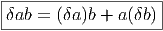
 La
première relation identifie deux éléments, jusque là différents, de l’algèbre libre.
L’ensemble obtenu est, par construction, une algèbre, qu’on note Ω. La dernière
chose à faire consiste à introduire l’opérateur noté δ, défini pour tout élément a
de par δ(a) = δa et δδa = 0. L’algèbre obtenue devient ainsi une algèbre
différentielle.
La
première relation identifie deux éléments, jusque là différents, de l’algèbre libre.
L’ensemble obtenu est, par construction, une algèbre, qu’on note Ω. La dernière
chose à faire consiste à introduire l’opérateur noté δ, défini pour tout élément a
de par δ(a) = δa et δδa = 0. L’algèbre obtenue devient ainsi une algèbre
différentielle.
On pourrait, bien entendu, formaliser la construction ci-dessus, en terme
d’idéaux et de relations, mais, le résultat est, somme toute, très simple : on part
des éléments a de et on introduit des différentielles δa (attention, ce ne sont
pas des éléments de ) de façon à ce que la règle de Leibniz (la règle de
dérivation d’un produit) soit vérifiée.
Les règles ci-dessus permettent de re-écrire n’importe quel élément de Ω
sous la forme d’une combinaison linéaire de termes du type a0δa1δa2…δap où tous
les ai sont des éléments de et où le seul élément qui n’est pas différentié (a0) se
situe à gauche. En effet, par exemple
Cette remarque montre que Ω = ⊕
p=0∞Ωp, où Ωp est l’espace vectoriel
engendré par les termes du type a0δa1δa2…δap, avec ai ∈. Ainsi, Ω est donc
bien Z Z-graduée. Il est facile de vérifier, en utilisant les règles précédentes que,
pour σ ∈ Ωp et τ ∈ Ω
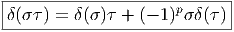
Le fait que l’algèbre différentielle Ω soit universelle vient du fait que, dans sa
construction, nous n’avons rien imposé d’autre que la règle de Leibniz
ainsi que les relations algébriques déjà présentes dans . Tout autre
algèbre différentielle construite sur contiendra donc automatiquement des
relations supplémentaires. Soit (Ξ,d) une autre algèbre différentielle,
également associée à , on sait qu’il doit alors exister un morphisme α de Ω
dans Ξ, ce morphisme est simplement défini sur les éléments de base, par
α(a0δa1δa2…δap) = a0da1da2…dap et étendu par linéarité sur toute l’algèbre
Ξ.
Construction explicite de Ω par produit tensoriel
La construction précédente est simple et, en principe suffisante. Cela
dit, il est agréable de pouvoir considérer δa comme un objet construit
concrètement “à partir” de a et non comme un symbole abstrait. Voici donc une
seconde construction de l’algèbre des formes universelles qui répond à ce
souci.
Soit m : ⊗ , l’opérateur de multiplication m(a ⊗ b) = ab.
, l’opérateur de multiplication m(a ⊗ b) = ab.
Posons Ω0 = On décide de noter (prenons a et b dans ) :
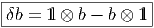
Ainsi, δb apparait comme une sorte de différence discrète (nous verrons un peu
plus loin comment, dans l’exemple où désigne une algèbre de fonctions sur une
variété comment ceci est explicitement réalisé). Plus généralement, nous
poserons :

Soit Ω1 l’espace vectoriel engendré par les éléments de  du type aδb.
Notons que aδb appartient au noyau de l’opérateur de multiplication
m(aδb) = ab - ab1 l = 0. Plus généralement, il est évident que les éléments de
Ker(m) sont des combinaisons linéaires d’éléments de ce type. En d’autres
termes, on a
du type aδb.
Notons que aδb appartient au noyau de l’opérateur de multiplication
m(aδb) = ab - ab1 l = 0. Plus généralement, il est évident que les éléments de
Ker(m) sont des combinaisons linéaires d’éléments de ce type. En d’autres
termes, on a

On pose alors
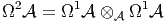 et
plus généralement
 Notons que Ωp est inclus dans la (p + 1)-ième puissance tensorielle de (bien
noter cette translation d’une unité !). Attention : le produit tensoriel est pris au
dessus de et non pas au dessus du corps des scalaires ! Cela signifie, en clair,
la chose suivante : Considérons le produit de l’élément (a0δa1) ∈ Ω1⊂⊗
par l’élément (δa2) ∈ Ω1⊂⊗. Ce produit, pris dans Ω1⊗ Ω1 est
l’élément
Notons que Ωp est inclus dans la (p + 1)-ième puissance tensorielle de (bien
noter cette translation d’une unité !). Attention : le produit tensoriel est pris au
dessus de et non pas au dessus du corps des scalaires ! Cela signifie, en clair,
la chose suivante : Considérons le produit de l’élément (a0δa1) ∈ Ω1⊂⊗
par l’élément (δa2) ∈ Ω1⊂⊗. Ce produit, pris dans Ω1⊗ Ω1 est
l’élément
 de
⊗⊗⊗⊗ tandis que le produit dans Ω1⊗
de
⊗⊗⊗⊗ tandis que le produit dans Ω1⊗
 Ω1 est un élément de
⊗⊗⊗, en l’occurence, il s’agit de
Ω1 est un élément de
⊗⊗⊗, en l’occurence, il s’agit de
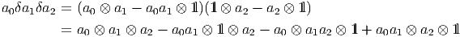
L’écriture explicite de a0δa1δa2 en termes de produit tensoriels contient donc un
unique terme a0 ⊗a1 ⊗a2 et une somme alternée d’autres termes, chacun d’entre
eux contenant l’unité de l’algèbre ainsi qu’un unique produit du type apap+1. On
pourrait également partir de cette dernière écriture explicite pour définir
l’algèbre Ω. Noter que la multiplication, lorsqu’on écrit explicitement les
éléments de cette algèbre en termes de produits tensoriels, s’écrit explicitement
en concaténant les différents termes et en effectuant la multiplication dans
.
Formes universelles dans le cadre commutatif : le calcul différentiel non
local
Soit M une variété différentiable, ou même, un ensemble absolument quelconque.
On peut alors construire l’algèbre commutative des fonctions sur M (bien
entendu, lorsque M est un espace topologique, ou une variété différentielle, on
peut choisir les fonctions continues, les fonctions différentiables etc). Notons
encore cette algèbre, sans préciser davantage. La construction de Ω reste
valable, puisque nous n’avons rien eu a supposer d’autre que l’associativité de
l’algèbre . Considérons l’élément
 Puisque les éléments de sont des fonctions sur M (des fonctions d’une variable
x ∈ M) les éléments de ⊗ sont des fonctions de deux variables :
Puisque les éléments de sont des fonctions sur M (des fonctions d’une variable
x ∈ M) les éléments de ⊗ sont des fonctions de deux variables :
-=-a(x)b(y)---a(x)b(x)-=-a(x)(b(y) --b(x))-](source891x.png) Cette fonction, comme, il se doit, s’annulle lorsqu’on pose x = y, puisque
l’opérateur de multiplication m(a ⊗ b) = ab, dans le cas présent, peut
s’écrire sous la forme m(a(x)b(y)) = a(x)b(x). Ainsi, Ω1 est constitué de
l’ensemble des fonctions de deux variables sur l’espace M, qui s’annulent sur la
diagonale.
Cette fonction, comme, il se doit, s’annulle lorsqu’on pose x = y, puisque
l’opérateur de multiplication m(a ⊗ b) = ab, dans le cas présent, peut
s’écrire sous la forme m(a(x)b(y)) = a(x)b(x). Ainsi, Ω1 est constitué de
l’ensemble des fonctions de deux variables sur l’espace M, qui s’annulent sur la
diagonale.
Remarque : lorsque M est discret, il est d’usage d’identifier, comme nous
venons de le faire, l’algèbre des fonctions Fun(M × M… × M) du produit
cartésien de l’espace M par lui-même avec l’algèbre produit tensoriel
Fun(M) ⊗ Fun(M) ⊗…Fun(M). Lorsque M est un espace topologique (en
particulier une variété), on n’a, en général, qu’une inclusion stricte de
Fun(M) ⊗ Fun(M) ⊗…Fun(M) dans Fun(M × M… × M), et il faudrait
tenir compte de la topologie utilisée pour pouvoir préciser davantage.
Nous ne tiendrons pas compte de cette subtilité topologique dans ce qui
suit.
Considérons maintenant un élément de Ω2 :
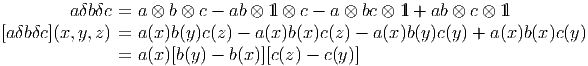
Cet élément peut donc s’interpréter comme une fonction de trois
variables, qui s’annule lorsque x = y ou lorsque y = z (mais pas lorsque
x = z).
Plus généralement, les élements de Ωp peuvent être considérés comme des
fonctions de p + 1 variables qui s’annulent lorsque deux arguments successifs sont
égaux.
On voit que δb désigne bien ici la différence discrète b(y) - b(x). Lorsque M
est une variété différentiable, on peut faire tendre y vers x et obtenir ainsi la
forme différentielle usuelle db(x) = ∂b _
∂xμdxμ. La théorie générale s’applique
évidemment dans ce cas particulier : ΩpC∞(M) est une algèbre différentielle
universelle mais il existe par ailleurs une algèbre de formes différentielles (ΛM,d)
que nous connaissons bien (le complexe de De Rham), il existe donc un
morphisme α de la première algèbre sur la seconde. Ce morphisme envoie
a0δa1δa2… (dans le cas présent a0(x)(a1(y) - a1(x))(a2(z) - a2(y))…) sur la forme
différentielle a0da1 ∧ da2….
Notons que le noyau de ce morphisme est très gros. D’une part, on sait que
lorsque p > dim(M), ΛpM = 0, alors que ΩpC∞(M) n’est jamais nul (quel que
soit p). Par ailleurs, même si p ≤ dim(M) il est facile de trouver des éléments de
ΩC∞(M) qui s’envoient sur zéro : par exemple, l’élément aδ(bc) - abδc - caδb
n’est certainement pas nul dans Ω1C∞(M), alors que ad(bc) -abdc-cadb est nul
dans Λ1M.
L’exemple de lC ⊕ lC
L’exemple qui nous venons de considérer montre bien que cette algèbre
différentielle de De Rham, dont nous avons l’habitude, est loin d’être la seule
possible, même dans le cadre commutatif, lorsqu’on veut définir un calcul
différentiel. L’inconvénient de l’algèbre des formes universelles, c’est qu’elle est
généralement très (trop) “grosse” et peu maniable. Cependant, il est des cas,
même commutatifs, où l’algèbre de De Rham n’est pas utilisable — par exemple
lorsque M n’est pas différentiable — et il est bien pratique de pouvoir faire
appel à la dernière construction. Un autre cas interessant est celui d’une
variété M qui n’est pas connexe : on peut alors, bien sûr, faire du calcul
différentiel “à la De Rham” sur chaque composante connexe, mais, ce faisant,
on perd de l’information, car les formes universelles non nulles du type
aδb[x,y] où x et y appartiennent à deux composantes connexes distinctes
n’ont aucune correspondance dans l’algèbre de De Rham. Pour illustrer ce
phénomène, qui se trouve posséder une interprétation physique aussi bien
inattendue que capitale, nous allons choisir l’exemple d’un espace non
connexe extrêmement simple : celui fourni par la donnée de deux points.
Dans ce cas, les 1-formes usuelles (celles de De Rham) n’existent pas. Par
contre, on va pouvoir construire et utiliser l’algèbre des formes universelles
Ω = Ω(lC ⊕ lC).
Considérons donc un ensemble discret {L,R} constitué de deux éléments que
nous désignons par les lettres L et R (penser a Left et Right). Soit x la fonction
coordonnée x(L) = 1,x(R) = 0 et y la fonction coordonnée y(L) = 0,y(R) = 1.
Remarque : xy = yx = 0, x2 = x,y2 = y and x + y = 1 l où 1 l est la fonction unité
1l(L) = 1, 1 l(R) = 1. Un élément quelconque de cette algèbre associative (et
commutative) engendrée par x et y peut s’écrire λx + μy (où λ et μ sont deux
nombres complexes) et peut être représenté par une matrice diagonale
 . On peut écrire = lCx ⊕ lCy. L’algèbre est donc isomorphe à
lC ⊕ lC. Nous introduisons maintenant deux symboles δx,δy, ainsi qu’une
différentielle δ qui satisfait à δ2 = 0, qui doit satisfaire à δ1 l = 0 et à la règle
habituelle de dérivation d’un produit (règle de Leibniz). Il est évident
que Ω1, l’espace des différentielles de degré 1 est engendré par les deux
quantités indépendantes xδx and yδy. En effet, la relation x + y = 1 l
implique δx + δy = 0 ; de plus, les relations x2 = x and y2 = y impliquent
(δx)x + x(δx) = (δx), donc (δx)x = (1 l - x)δx and (δy)y = (1 l - y)δy. Ceci
implique également, par exemple, δx = 1 lδx = xδx + yδx, xδx = -xδy,
yδx = (1 l - x)δx, (δx)x = yδx = -yδy etc . Plus généralement, désignons
par Ωp, l’espace des différentielles de degré p ; les relations ci-dessus
montrent qu’une base de cet espace vectoriel est fourni par les éléments
{xδxδx…δx,yδyδy…δy}. Posons Ω0 = et Ω = ⊕
pΩp. L’espace Ω est une
algèbre : on peut multiplier les formes librement, mais il faut tenir compte de la
règle de Leibniz, par exemple x(δx)x(δx) = x(1 l -x)(δx)2. Attention : l’algèbre Ω
est de dimension infinie, comme il se doit puisque p parcourt toutes les
valeurs de 0 à l’infini. Bien entendu, la différentielle δ obéit à la règle de
Leibniz lorsqu’elle agit sur les éléments de mais elle obéit à la règle de
Leibniz graduée lorsqu’elle agit sur les éléments de Ω, en l’occurence
δ(ω1ω2) = δ(ω1)ω2 + (-1)∂ω1ω
1δ(ω2) où ∂ω1 désigne 0 ou 1 suivant que ω1 est
pair ou impair.
. On peut écrire = lCx ⊕ lCy. L’algèbre est donc isomorphe à
lC ⊕ lC. Nous introduisons maintenant deux symboles δx,δy, ainsi qu’une
différentielle δ qui satisfait à δ2 = 0, qui doit satisfaire à δ1 l = 0 et à la règle
habituelle de dérivation d’un produit (règle de Leibniz). Il est évident
que Ω1, l’espace des différentielles de degré 1 est engendré par les deux
quantités indépendantes xδx and yδy. En effet, la relation x + y = 1 l
implique δx + δy = 0 ; de plus, les relations x2 = x and y2 = y impliquent
(δx)x + x(δx) = (δx), donc (δx)x = (1 l - x)δx and (δy)y = (1 l - y)δy. Ceci
implique également, par exemple, δx = 1 lδx = xδx + yδx, xδx = -xδy,
yδx = (1 l - x)δx, (δx)x = yδx = -yδy etc . Plus généralement, désignons
par Ωp, l’espace des différentielles de degré p ; les relations ci-dessus
montrent qu’une base de cet espace vectoriel est fourni par les éléments
{xδxδx…δx,yδyδy…δy}. Posons Ω0 = et Ω = ⊕
pΩp. L’espace Ω est une
algèbre : on peut multiplier les formes librement, mais il faut tenir compte de la
règle de Leibniz, par exemple x(δx)x(δx) = x(1 l -x)(δx)2. Attention : l’algèbre Ω
est de dimension infinie, comme il se doit puisque p parcourt toutes les
valeurs de 0 à l’infini. Bien entendu, la différentielle δ obéit à la règle de
Leibniz lorsqu’elle agit sur les éléments de mais elle obéit à la règle de
Leibniz graduée lorsqu’elle agit sur les éléments de Ω, en l’occurence
δ(ω1ω2) = δ(ω1)ω2 + (-1)∂ω1ω
1δ(ω2) où ∂ω1 désigne 0 ou 1 suivant que ω1 est
pair ou impair.
Dans le cas particulier de la géométrie d’un ensemble à deux points, {L,R}
nous retrouvons le fait qu’un élément A de Ω1 considéré comme fonction de deux
variables doit obéir aux contraintes A(L,L) = A(R,R) = 0 et peut donc être
écrit comme une matrice 2 × 2 indexée par L et R dont les éléments non
diagonaux sont nuls (“matrice hors diagonale”). Un élement F de Ω2 peut être
considéré comme fonction de trois variables obéissant aux contraintes
F(L,L,R) = F(R,R,L) = F(L,R,R) = F(R,L,L) = F(R,R,R) = F(L,L,L) = 0.
Les deux seules composantes non nulles sont donc F(L,R,L) and F(R,L,R). Le
fait que dim(Ωp) = 2 pour tout p suggère la possibilité d’utiliser des matrices de
taille fixe (en l’occurence des matrices 2 × 2) pour toutes valeurs de p. Ceci ne
serait pas le cas pour une géométrie à plus de deux points. En effet, on peut
aisément généraliser la construction précédente, par exemple en partant de trois
points au lieu de deux. Mais dans ce cas, Ω1 est de dimension 6 et Ω2 de
dimension 12. Avec q points, la dimension de Ωp est q(q - 1)p. Ce dernier résultat
vient du fait que dim(⊗) - dim(Ker(m)) = dim(). On a donc
dim(Ω1) = q2 - q.
Pour revenir au cas de la géométrie à deux points, nous voyons qu’il est
possible de représenter λx(δx)2p + μy(δy)2p comme une matrice diagonale  et l’élément αx(δx)2p+1 + βy(δy)2p+1 comme la matrice “hors” diagonale
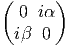 Autrement dit nous pouvons représenter les formes paires par des
matrices paires (i.e. diagonales) et les formes impaires par des matrices impaires
(i.e. “hors” diagonales) ; ceci est non seulement naturel mais obligatoire si on
veut que la multiplication des matrices soit compatible avec la multiplication dans
Ω. En effet, les relations
et l’élément αx(δx)2p+1 + βy(δy)2p+1 comme la matrice “hors” diagonale
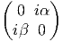 Autrement dit nous pouvons représenter les formes paires par des
matrices paires (i.e. diagonales) et les formes impaires par des matrices impaires
(i.e. “hors” diagonales) ; ceci est non seulement naturel mais obligatoire si on
veut que la multiplication des matrices soit compatible avec la multiplication dans
Ω. En effet, les relations
 montrent que cette représentation utilisant des matrices 2 × 2 est effectivement un
homomorphisme d’algèbres Z Z2-graduées, de Ω (gradué par la parité de p) dans
l’algèbre des marices complexes 2 × 2 (avec graduation Z Z2- associée avec la
décomposition d’une matrice en une partie diagonale et hors diagonale). La
présence du facteur i dans les matrices hors diagonales représentant les éléments
impairs est nécessaire pour que les deux types de produits soient compatibles.
L’algèbre Ω s’obtient en effectuant la somme directe des espaces vectoriels Ωp.
Comme on l’a dit, l’algèbre Ω est donc de dimension infinie mais si nous
représentons toute l’algèbre Ω à l’aide de matrices 2 × 2 agissant sur un espace
vectoriel fixé de dimension 2, la p-graduation est perdue et seule la graduation Z Z2
est conservée.
montrent que cette représentation utilisant des matrices 2 × 2 est effectivement un
homomorphisme d’algèbres Z Z2-graduées, de Ω (gradué par la parité de p) dans
l’algèbre des marices complexes 2 × 2 (avec graduation Z Z2- associée avec la
décomposition d’une matrice en une partie diagonale et hors diagonale). La
présence du facteur i dans les matrices hors diagonales représentant les éléments
impairs est nécessaire pour que les deux types de produits soient compatibles.
L’algèbre Ω s’obtient en effectuant la somme directe des espaces vectoriels Ωp.
Comme on l’a dit, l’algèbre Ω est donc de dimension infinie mais si nous
représentons toute l’algèbre Ω à l’aide de matrices 2 × 2 agissant sur un espace
vectoriel fixé de dimension 2, la p-graduation est perdue et seule la graduation Z Z2
est conservée.
Nous verrons un peu plus loin qu’il est possible, en géométrie non
commutative, de donner un sens à la notion de connexion. Dans le cas le plus
simple, la forme de connexion A n’est autre qu’une forme de degré 1 appartenant
à une algèbre différentielle (Ξ,δ) associée à l’algèbre associative choisie. On
verra que la courbure F, dans ce cas, peut également s’écrire comme
F = δA + A2.
Dans le cas présent, Ξ = Ω. Une forme de degré 1 est un élément de Ω1.
Prenons A = (φxδx + φyδy). La représentation matricielle de A se lit
donc
 La courbure correspondante est alors F = δA + A2, mais
A2 = -φφx2δxδx -φφy2δyδy = -φφxδxδx -φφyδyδy et
δA = φδxδx + φδyδy = (φ + φ)(xδxδx + yδyδy). F peut donc s’écrire
aussi
La courbure correspondante est alors F = δA + A2, mais
A2 = -φφx2δxδx -φφy2δyδy = -φφxδxδx -φφyδyδy et
δA = φδxδx + φδyδy = (φ + φ)(xδxδx + yδyδy). F peut donc s’écrire
aussi
 Nous pouvons choisir un produit hermitien sur Ω en décidant que la base
x(δx)p,y(δy)q est orthonormale. Alors |F|2 = FF = (φ + φ - φφ)2. Le lecteur
familier des théories de jauge avec brisure de symmétrie reconnaitra ici un
potentiel de Higgs translaté V [ϕ] = |F|2. (voir figure 6.1).
Nous pouvons choisir un produit hermitien sur Ω en décidant que la base
x(δx)p,y(δy)q est orthonormale. Alors |F|2 = FF = (φ + φ - φφ)2. Le lecteur
familier des théories de jauge avec brisure de symmétrie reconnaitra ici un
potentiel de Higgs translaté V [ϕ] = |F|2. (voir figure 6.1).
Notre calcul différentiel, dans le cas présent, est commutatif, puisque l’algèbre
des fonctions sur un espace à deux points est simplement l’algèbre des matrices
diagonales 2 × 2 avec des coefficients complexes (ou réels) mais notre
calcul différentiel est, en un sens, “non local” puisque la “distance” entre
les deux points étiquetés par L et R ne peut pas tendre vers zéro…Le
lecteur aura sans doute remarqué que ces résultats peuvent s’interpréter en
termes de champs de Higgs. Nous y reviendrons (exemple poursuivi en
6.2.4).
6.2.3 L’algèbre différentielle ΩDer
Rappel sur les dérivations d’algèbre
Rappelons (relire 1.10.1) que
- Der() est une algèbre de Lie
- Der() n’est pas un module sur
- Der() est un module sur le centre de
- Int() = {ada∕a ∈ } avec ada(b) = [a,b] qu’on appelle ensemble
des dérivations intérieures est un idéal d’algèbre de Lie de Der (en
effet soit Xa = ada ∈ Int et Y ∈ Der, alors [Y,Xa] = adY (a) ∈).
- On note Out = Der∕Int
Formes différentielles
Classiquement, une forme différentielle ω est une n-forme sur l’algèbre de Lie des
champs de vecteurs, antisymétrique, linéaire par rapport aux scalaires, bien
sûr, mais aussi linéaire par rapport aux fonctions, et à valeur dans les
fonctions.
On va définir ici les formes différentielles comme des objets qui soient des
n-formes sur l’algèbre de Lie des dérivations de , antisymétrique, linéaire par
rapport au scalaires, bien sur, mais aussi linéaire par rapport au centre  (A) de
et à valeurs dans l’algèbre .
(A) de
et à valeurs dans l’algèbre .
En d’autres termes, on pose

Cette définition est due à [6]
C’est une algèbre différentielle graduée avec un produit défini par
 où α ∈ΩDerm() et β ∈Ω
Dern(), et où d est une différentielle définie
comme suit : la forme différentielle dω peut se définir directement par son
action sur tout (k + 1)-uplet {v1,v2,…,vk+1} de dérivations, en posant
où le symbole ^ désigne l’omission de l’argument correspondant.
où α ∈ΩDerm() et β ∈Ω
Dern(), et où d est une différentielle définie
comme suit : la forme différentielle dω peut se définir directement par son
action sur tout (k + 1)-uplet {v1,v2,…,vk+1} de dérivations, en posant
où le symbole ^ désigne l’omission de l’argument correspondant.
En particulier, pour une 1-forme da (agissant sur la dérivation v) on a
simplement
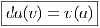
On peut immédiatement vérifier que d est alors une dérivation graduée de
degré 1 sur l’algèbre ΩDer() et que d2 = 0.
Les définitions qui précèdent sont tout à fait naturelles puisque ce sont
exactement les mêmes que pour les différentielles habituelles (rappelons encore
une fois que, dans le cas usuel de la géométrie ”commutative”, les dérivations
d’algèbres vk de l’algèbre = C∞(M) ne sont autres que les champs de
vecteurs).
Distinction entre ΩDer et ΩDer
En utilisant la règle de Leibniz, on voit qu’un produit quelconque d’éléments
de a et de différentielles (du type da) peut se réordonner sous la forme
d’une somme de termes du type a0da1…dan. Cela dit, il y a une petite
subtilité : avec la définition que nous avons adoptée, il n’est pas clair que tout
élément de ΩDer puisse s’écrire comme une somme finie d’éléments
de ce type. Ceci conduit à introduire la définition suivante : on pose
ΩDer = ⊕
n=0∞Ω
Dern où Ω
Dern est le sous-espace vectoriel de Ω
Dern
constitué des sommes finies du type a0da1…dan. On démontre alors [6] que ΩDer
est la plus petite sous algèbre différentielle graduée de ΩDer contenant
.
En général, on peut oublier cette distinction entre ΩDer et ΩDer. Dans le cas
de la géométrie des variétés (variétés connexes ou réunion dénombrables de
variétés connexes), on peut démontrer que les deux notions coïncident lorsque la
variété M est paracompacte. Cela qui revient à dire que la variété admet une
base topogique dénombrable…(et dans ce cas elle admet également un atlas
comprenant au plus une infinité dénombrable de cartes). Pour des variétés
paracompactes, donc (hypothèse qu’on fait presque toujours !), les deux notions
coïncident et coïncident évidemment avec l’algèbre des formes différentielles
usuelles (ceci découlant immédiatement de l’identité entre les définitions
ci-dessus et celles qu’on peut trouver en 1.6.2). Lorsque l’algèbre n’est pas
commutative, on aura également les deux possibilites : ΩDer et ΩDer qui
peuvent coïncider ou non. Le cas le moins “sauvage” est évidemment
celui où les deux notions coïncident (analogue non commutatif du cas
paracompact). Dans la suite de cette section, on supposera que c’est le
cas.
Exemples
- Cas des variétés. On sait déja que = C∞(M), que Der =
ΓTM (champs de vecteurs) et que ΩDer = ΛM = ΓT*M (formes
différentielles usuelles).
- Cas des matrices. = M(n, lC). Il est bien connu que toutes les
dérivations de cette algèbre sont intérieures, c’est à dire qu’elles sont
obtenues en calculant des commutateurs avec une matrice donnée.
Cela dit, prendre un commutateur avec une matrice X ou prendre
un commutateur avec une matrice X + k1 l donne le même résultat.
On peut donc décider de normaliser en fixant la trace de X à
zéro. L’ensemble des matrices n × n de trace nulle coïncide, on le
sait (cf chapitre 2) avec l’algèbre de Lie de SL(n, lC). On voit que
Der = Lie(SL(n, lC)). Les éléments de ΩDern sont donc les n
formes (antisymétriques) sur Lie(SL(n, lC) à valeurs dans l’algèbre
elle-même, c’est à dire dans M(n, lC). On peut finalement écrire

- Cas des matrices à éléments fonctions sur une variété. On prend
= M(n, lC) ⊗ C∞(M). Nous ne détaillerons pas cet exemple (voir
[6]). Le résultat est assez intuitif et s’obtient à partir des deux cas
précédents : Der = Der(C∞(M)) ⊗ 1 l ⊕ C∞(M) ⊗ Der(M(n, lC))
et ΩDer(M(n, lC) ⊗ C∞(M)) = Λ(M) ⊗ Ω
DerM(n, lC). Cet exemple
a été utilisé pour la construction de certains modèles physiques
généralisant les théories de jauges usuelles (voir [10])
Remarque : il existe des algèbres très simples qui n’admettent pas de
dérivations…par exemple l’algèbre des nombres complexes ! Dans ce cas, la
construction qu’on vient d’exposer ne donne rien (bien que l’algèbre des formes
universelles soit néanmoins non triviale).
6.2.4 Algèbres différentielles pour espaces non connexes
Soient et 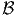 deux algèbres associatives (commutatives ou non). Il est
certain que l’algèbre des formes universelles pour l’algèbre ⊗ n’est pas
isomorphe au produit tensoriel gradué des algèbres universelles de et
séparément.
 En
effet, par exemple, Ω1(⊗) ⊂⊗⊗⊗ alors que
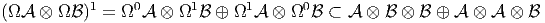
Cependant, Ω(⊗) et Ω⊗ Ω sont toutes deux des algèbres différentielles
ZZ-graduées dont le terme de degré zéro coïncide avec ⊗. La première étant
universelle, il existe donc un morphisme surjectif de la première sur la
seconde.
En
effet, par exemple, Ω1(⊗) ⊂⊗⊗⊗ alors que
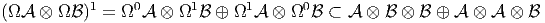
Cependant, Ω(⊗) et Ω⊗ Ω sont toutes deux des algèbres différentielles
ZZ-graduées dont le terme de degré zéro coïncide avec ⊗. La première étant
universelle, il existe donc un morphisme surjectif de la première sur la
seconde.
Supposons maintenant que qu’on s’intéresse à une variété non connexe
obtenue comme réunion (disjointe) de plusieurs copies (deux pour simplifier)
d’une même variété connexe M. On se retrouve donc dans la situation précédente
avec = C∞(M) et = lC ⊕ lC. En effet ⊗ = C∞(M) ⊕ C∞(M). L’algèbre
différentielle Ω(C∞(M)) ⊗ Ω(lC ⊕ lC) est encore peu commode à utiliser (on se
souvient que les éléments de Ω(C∞(M)) sont des fonctions de plusieurs variables
qui s’annulent lorsque deux arguments successifs sont égaux). Par contre, rien
ne nous interdit de remplacer cette dernière par l’algèbres des formes
différentielles usuelles ΛM. On obtient ainsi le diagramme suivant, où
chaque flèche désigne un morphisme surjectif d’algèbres différentielles
graduées :

L’algèbre
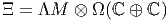
produit tensoriel gradué du complexe de De Rham usuel par l’algèbre des formes
universelles sur l’espace à deux points lC ⊕ lC, constitue une algèbre différentielle
intéressante à plus d’un titre et très facile à utiliser. Elle a été étudiée dans [12]
et utilisée auparavant dans [11]. Sa structure s’obtient immédiatement à partir de
notre étude de Ω(lC ⊕ lC). On se souvient que Ωp(lC ⊕ lC) est toujours de dimension 2
et représentable, soit à l’aide de matrices 2 × 2 diagonales (lorsque p est pair) soit
à l’aide de matrices 2 × 2 hors diagonales (lorsque p est impair). Les éléments
de
 peuvent donc s’écrire à l’aide de matrices 2 × 2 dont les éléments sont des formes
différentielles usuelles sur la variété M (de degré p variant de 0 à n) et
positionnées soit sur la diagonale (quand p est pair) soit en dehors de la diagonale
(lorsque p est impair). Le produit dans Ξ s’obtient immédiatement à
partir du produit extérieur dans ΛM et du produit déjà étudié dans
Ω(lC ⊕ lC).
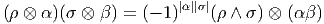 On
peut finalement encore généraliser la construction précédente en remplaçant
l’algèbre des formes différentielles sur la variété M par l’algèbre des formes
différentielles sur M à valeurs dans l’algèbre (associative) des matrices n × n
complexes.
peuvent donc s’écrire à l’aide de matrices 2 × 2 dont les éléments sont des formes
différentielles usuelles sur la variété M (de degré p variant de 0 à n) et
positionnées soit sur la diagonale (quand p est pair) soit en dehors de la diagonale
(lorsque p est impair). Le produit dans Ξ s’obtient immédiatement à
partir du produit extérieur dans ΛM et du produit déjà étudié dans
Ω(lC ⊕ lC).
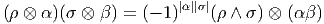 On
peut finalement encore généraliser la construction précédente en remplaçant
l’algèbre des formes différentielles sur la variété M par l’algèbre des formes
différentielles sur M à valeurs dans l’algèbre (associative) des matrices n × n
complexes.
On pourrait ici continuer notre exemple des connexions sur lC ⊕ lC, en
choisissant cette fois-ci pour forme de connexion un élement quelconque de Ξ1. La
norme carré de la courbure s’interprète alors physiquement comme le lagrangien
d’un modèle de jauge U(1) × U(1), avec potentiel de Higgs et symmétrie brisée.
Un des deux champs de jauge devient massif (le boson Z0) et l’autre reste sans
masse (le photon).
6.2.5 L’algèbre différentielle ΩD
La construction qui suit est un peu plus élaborée que les précédentes, en ce sens
qu’elle utilise un plus grand nombre d’ingrédients. On a vu que la construction de
l’algèbre des formes différentielle universelle Ω() était possible, pour une algèbre
associative quelconque . L’algèbre différentielle ΩDer(), quant à elle, fait jouer
un rôle particulier aux dérivations de (pour autand qu’elles existent). L’algèbre
différentielle que nous allons présenter maintenant, et dont la construction est due
à A. Connes, repose sur la donnée d’un “triplet spectral”, donnée qui englobe,
non seulement l’algèbre associative elle-même, mais également d’autres
données qui peuvent être considérées comme le codage d’une structure
riemannienne non commutative. Certains rappels et/ou constructions annexes
sont nécessaires.
Dans l’approche traditionnelle de la géométrie différentielle, on commence par
se donner un espace M (on peut alors parler de l’algèbre des fonctions sur M), on
le munit tout d’abord d’une topologie (on peut alors parler de l’algèbre C0(M)
des fonctions continues sur M), puis d’une structure différentiable (ce qui revient
à choisir une sous-algèbre particulière C∞(M) incluse dans dans C0(M)), puis
d’une structure riemannienne (choix d’une métrique), puis d’une structure
spinorielle (si la variété le permet), on construit alors le fibré des spineurs, puis
l’opérateur de Dirac relatif à la métrique choisie et agissant sur les champs
de spineurs (sections du fibré des spineurs). Dans le cas d’une variété
compacte et d’une métrique proprement riemannienne, on peut alors
fabriquer un produit scalaire global et un espace de spineurs (l’espace L2 des
champs de spineurs de carré intégrable). Dans le cas où la variété est de
dimension paire, on peut également décomposer cet espace de Hilbert en
deux sous-espaces supplémentaires correspondant à des demi-spineurs
de chiralités opposées, l’opérateur de Dirac allant d’un sous-espace à
l’autre (on rappelle que cet opérateur anti-commute avec l’opérateur de
chiralité).
Tout ceci est maintenant bien connu du lecteur (voir chapitres précédents).
L’approche “à la A. Connes” [3] de la géométrie non commutative consiste
à “renverser la vapeur” en écrivant tout ceci à l’envers, et sous forme
algébrique (en utilisant des algèbres commutatives), puis de promouvoir
l’essentiel de ces transcriptions au rang de définitions, en effaçant l’adjectif
“commutatif”.
La théorie se divise alors en deux : il existe un cas dit “pair” et un cas dit
“impair”. Nous allons simplement ébaucher la discussion du cas pair, cas qui
généralise au cas non commutatif la géométrie associée à la donnée d’un
opérateur de Dirac sur une variété de dimension paire. On se donne un
triplet (, ,D) possédant les propriétés suivantes : est un espace de
Hilbert Z Z2 gradué (l’opérateur de graduation est alors appelé opérateur de
chiralité), est une algèbre associative munie d’une involution (*) et
représentée fidèlement dans à l’aide d’opérateurs bornés pairs, et D est
un opérateur auto-adjoint tel que les commutateurs [D,a],a ∈ soient
bornés ; on impose également à la résolvente (D + i)-1 d’être un opérateur
compact.
,D) possédant les propriétés suivantes : est un espace de
Hilbert Z Z2 gradué (l’opérateur de graduation est alors appelé opérateur de
chiralité), est une algèbre associative munie d’une involution (*) et
représentée fidèlement dans à l’aide d’opérateurs bornés pairs, et D est
un opérateur auto-adjoint tel que les commutateurs [D,a],a ∈ soient
bornés ; on impose également à la résolvente (D + i)-1 d’être un opérateur
compact.
Un tel triplet est appelé triplet spectral mais on pourrait peut-être, de façon
plus imagée, le désigner sous le nom d’espace riemannien quantique. Dans le cas
de la géométrie commutative, coïnciderait avec la complexifiée de l’algèbre
C∞(M), avec l’espace de Hilbert L2( ) des champs de spineurs de carré
intégrable, et D avec l’opérateur de Dirac lui-même.
) des champs de spineurs de carré
intégrable, et D avec l’opérateur de Dirac lui-même.
Dans le cas classique (commutatif), si on n’impose pas de propriété
de compacité pour la résolvente de D, l’algèbre (qui est telle que les
commutateurs de ses éléments avec D soient bornés) n’est autre que l’algèbre des
fonctions Lipschitziennes sur M, c’est à dire celle dont les éléments sont tels que
|f(x) - f(y)|≤ cd(x,y),∀x,y ∈ M.
Dans ce cadre commutatif, il se trouve qu’il est en fait possible de retrouver la
distance riemannienne d(x,y) entre deux points quelconques x et y de M à partir
de ces données. En effet, on montre que
![d (x, y) = Sup {|f (x) - f(y)|,f ∈ A, |[D, f]| ≤ 1}](source911x.png) Le
concept de distance, qu’on relie d’habitude à un procédé de minimisation entre
différents points est alors obtenu grâce à un procédé de maximisation pour les
fonctions définies sur ces points.
Le
concept de distance, qu’on relie d’habitude à un procédé de minimisation entre
différents points est alors obtenu grâce à un procédé de maximisation pour les
fonctions définies sur ces points.
Nous avons maintenant tout ce qu’il nous faut pour construire l’algèbre
différentielle ΩD(). Nous savons déjà construire l’algèbre des formes universelles
Ω(). Soit ω = a0δa1δa2…δan, une n-forme universelle (un élément de Ωn()).
Nous lui associons l’opérateur borné
![|-------------------------------|
π [ω ] = a [D, a ][D, a ]...[D, a ]
---------0----1-----2---------n--](source912x.png) Il
est facile de vérifier que cette application est une représentation de l’algèbre Ω()
dans l’algèbre des opérateurs bornés sur l’espace de Hilbert (on se
souvient que est, par hypothèse, représenté dans ). Ceci vient du
fait que la dérivation d’algébre d est représentée par l’opération [D,.]
qui est elle-même une dérivation. La première est de carré nul, mais ce
n’est malheureusement pas le cas de la seconde. En d’autres termes, la
représentation π n’est pas une représentation d’algèbre différentielle. Il est
cependant facile de remédier à cela. Soit K le noyau de π ; c’est un idéal
de Ω(), puisque π est une représentation d’algèbre. Mais K n’est pas
en général un idéal différentiel : δK n’est pas dans K. On pose alors
J = K ⊕ δK. Par construction J est alors un idéal différentiel. On pose
alors
Il
est facile de vérifier que cette application est une représentation de l’algèbre Ω()
dans l’algèbre des opérateurs bornés sur l’espace de Hilbert (on se
souvient que est, par hypothèse, représenté dans ). Ceci vient du
fait que la dérivation d’algébre d est représentée par l’opération [D,.]
qui est elle-même une dérivation. La première est de carré nul, mais ce
n’est malheureusement pas le cas de la seconde. En d’autres termes, la
représentation π n’est pas une représentation d’algèbre différentielle. Il est
cependant facile de remédier à cela. Soit K le noyau de π ; c’est un idéal
de Ω(), puisque π est une représentation d’algèbre. Mais K n’est pas
en général un idéal différentiel : δK n’est pas dans K. On pose alors
J = K ⊕ δK. Par construction J est alors un idéal différentiel. On pose
alors
 Par
construction, l’algèbre obtenue ΩD() est bien une algèbre différentielle. On peut
finalement la regraduer en considérant les intersections de Ker(π) avec l’algèbre
universelle. La construction est donc achevée et on démontre que, dans le cas
classique (où = C∞(M)), l’algèbre différentielle Z Z-graduée Ω
D() obtenue est
isomorphe au complexe de De Rham Λ(M), c’est à dire à l’algèbre des formes
différentielles usuelles.
Par
construction, l’algèbre obtenue ΩD() est bien une algèbre différentielle. On peut
finalement la regraduer en considérant les intersections de Ker(π) avec l’algèbre
universelle. La construction est donc achevée et on démontre que, dans le cas
classique (où = C∞(M)), l’algèbre différentielle Z Z-graduée Ω
D() obtenue est
isomorphe au complexe de De Rham Λ(M), c’est à dire à l’algèbre des formes
différentielles usuelles.
Nous n’irons pas plus avant dans cette direction. Le lecteur interessé pourra
consulter une litérature plus spécialisée. Cela dit, il est peut-être important de
signaler ici que les constructions mathématiques présentées dans cette section —
et même dans le présent chapitre — sont souvent récentes, ce qui signifie
que les définitions et constructions proposées n’ont peut être pas encore
suffisemment bénéficié du mûrissement nécessaire. Cela ne signifie pas qu’elles
sont erronées mais elles n’ont peut être pas atteint le même degré de
stabilité temporelle que les autres concepts présentés auparavant dans cet
ouvrage.

![k+1
∑ i+1
dω (v1,v2,...,vk+1) = (- 1) vi[ω(v1,...,^vi,...,vk+1)]
i=1 ∑
+ (- 1)i+jω([vi,vj],v1,...,^vi,...,^vj,...,vk+1)
i≤i≤j≤k+1](source902x.png)